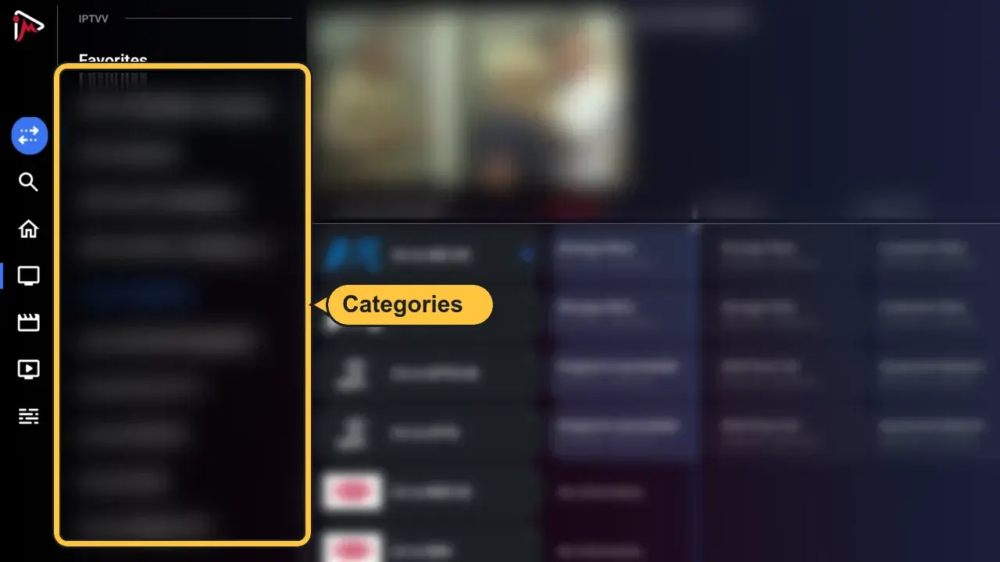
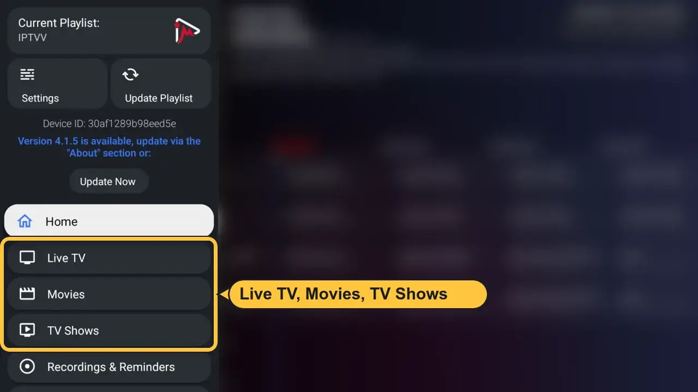
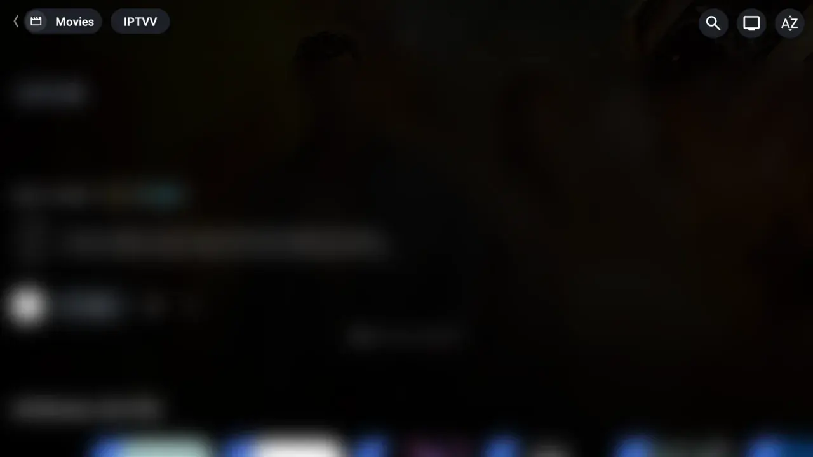
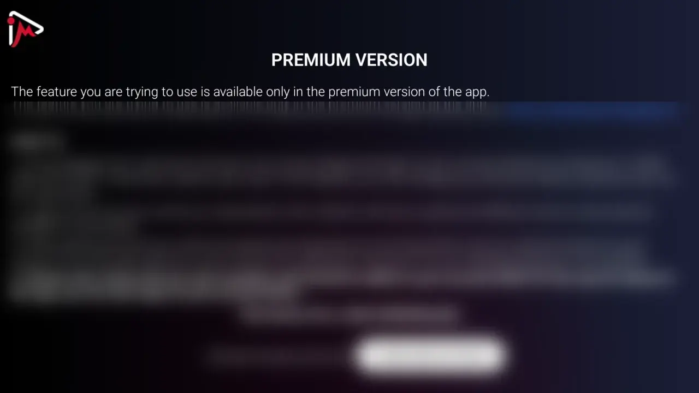

Choose your device for installation instructions. Player apps are supplied by third parties and may have separate fees.
Fire TV ＋
Choose your player
The player is the app you watch with. Your IPTV TORONTO subscription works in any player that supports Xtream Codes. These 3 are the ones we recommend, with full steps below.
New Fire TV with Vega OS? Models like the Fire TV Stick 4K Select can't install these players. Contact us and we'll help.
Not sure? Choose OTT Navigator. It's free, and you can switch later in 2 minutes.
What's the difference between OTT Navigator, TiviMate and iMPlayer?
Easier with your phone: on the Add a New Playlist screen, scan the QR code with your phone (or open implayer.tv/add and enter the code shown on your TV). Then type your login on your phone instead of with the remote.
Start watching
Press Left for categories and channels

Press the Menu button for Live TV, Movies and TV Shows

Movies and TV Shows are unlocked in iMPlayer

Extras like Multiview show PREMIUM VERSION

FreeLive TV, TV guide, movies and series.
Premium, optionalAdds catch-up, Multiview and downloads.
Not part of your IPTV TORONTO subscription.
You're all set
Enjoy watching. Stuck on a step? Contact our support team and we'll help.
See the steps again
Frequently Asked Questions
Which player should I choose?▸
OTT Navigator (Fire TV) or XCIPTV (Android TV) if you want everything unlocked at no extra cost. TiviMate for the nicest TV guide (movies and series stay locked until you buy its Premium). iMPlayer for a modern look with movies and series unlocked.
Is TiviMate or iMPlayer Premium part of my subscription?▸
No. They are apps from other companies, and their Premium is not part of your IPTV TORONTO subscription. We can't sell, refund or manage it.
Can I use a different player?▸
Yes. Any IPTV player that supports Xtream Codes login works with your subscription: type the same Server URL, username and password. We show these 3 because they are easy and reliable.
Can I switch players later?▸
Yes. Install another player and log in with the same details. It costs nothing extra. Two players at the same time use two connections.
Where are my Server URL, username and password?▸
In your IPTV TORONTO email (check spam too) or in your account at help.IPTV TORONTO/account. Still stuck? Contact our support team.
Nothing loads after I log in▸
Check your username and password letter by letter. Capitals count. The Server URL must start with http://. Then restart your device.
Android TV / Box ＋
Choose your player
The player is the app you watch with. Your IPTV TORONTO subscription works in any player that supports Xtream Codes. These 3 are the ones we recommend, with full steps below.
For Chromecast with Google TV, onn, TCL, Sony, Hisense, Philips, Nvidia Shield and most Android boxes.
Not sure? Choose XCIPTV. It's free, and you can switch later in 2 minutes.
What's the difference between XCIPTV, TiviMate and iMPlayer?
Easier with your phone: on the Add a New Playlist screen, scan the QR code with your phone (or open implayer.tv/add and enter the code shown on your TV). Then type your login on your phone instead of with the remote.
Start watching
Press Left for categories and channels
Press the Menu button for Live TV, Movies and TV Shows
Movies and TV Shows are unlocked in iMPlayer
Extras like Multiview show PREMIUM VERSION
FreeLive TV, TV guide, movies and series.
Premium, optionalAdds catch-up, Multiview and downloads.
Not part of your IPTV TORONTO subscription.
You're all set
Enjoy watching. Stuck on a step? Contact our support team and we'll help.
See the steps again
Frequently Asked Questions
Which player should I choose?▸
OTT Navigator (Fire TV) or XCIPTV (Android TV) if you want everything unlocked at no extra cost. TiviMate for the nicest TV guide (movies and series stay locked until you buy its Premium). iMPlayer for a modern look with movies and series unlocked.
Is TiviMate or iMPlayer Premium part of my subscription?▸
No. They are apps from other companies, and their Premium is not part of your IPTV TORONTO subscription. We can't sell, refund or manage it.
Can I use a different player?▸
Yes. Any IPTV player that supports Xtream Codes login works with your subscription: type the same Server URL, username and password. We show these 3 because they are easy and reliable.
Can I switch players later?▸
Yes. Install another player and log in with the same details. It costs nothing extra. Two players at the same time use two connections.
Where are my Server URL, username and password?▸
In your IPTV TORONTO email (check spam too) or in your account at help.IPTV TORONTO/account. Still stuck? Contact our support team.
Nothing loads after I log in▸
Check your username and password letter by letter. Capitals count. The Server URL must start with http://. Then restart your device.
XCIPTV or iMPlayer is not in my Play Store▸
Install the Downloader app. Type code 982469 for OTT Navigator (free, like XCIPTV) or code 82375 for iMPlayer.
Fill in your details:
• Playlist Name: Choose any name you want
• Portal URL: Enter the server URL from your email or your account at help.IPTV TORONTO/account
• Username & Password: Use the username and password from your email or your account
Click "Add Playlist" wait until contents finish downloading and enjoy streaming!
Method 2: UHF Setup
FreeLive TV, TV guide, catch-up and AirPlay.
UHF PRO, optionalAdds sync between your Apple devices and an unlimited TV guide.
Not part of your IPTV TORONTO subscription.
Download UHF - Love your IPTV from the App Store: Download from App Store iPhone and iPad with iOS 16 or newer. Apple TV with tvOS 17 or newer.
Open UHF and add a new playlist. Choose Xtream Codes
Type your Server URL, username and password from your email or your account at help.IPTV TORONTO/account
Open app and tap Add User, select Login with Xtream Codes API
Use the login details from your email or your account at help.IPTV TORONTO/account. Then click on "ADD USER" to continue
Wait a few seconds for the app to process your details
Tap the "Live TV" icon to start watching
Select the channel category you want to browse and tap a channel name to play it
Tip: For better performance on iOS devices, ensure you're connected to a stable WiFi network. Cellular data may cause buffering issues.
Frequently Asked Questions
Which app is best for iOS devices?
▸
iMPlayer is our recommended choice for its simplicity and reliability. UHF is a good free second option, and Smarters Player Lite is simple for beginners. All three work with your IPTV TORONTO subscription.
Do I need to jailbreak my Apple TV?
▸
No, all recommended apps are available directly from the App Store. No jailbreak required.
Can I use these apps on Apple TV?
▸
Yes! iMPlayer and other IPTV apps support Apple TV. You can also use AirPlay to stream from your iPhone/iPad to Apple TV.
Why is EPG not loading?
▸
Make sure "Auto-update EPG" is enabled in app settings. Some providers may take a few minutes to load the full guide.
Windows ＋
MyIPTV Player
Step 1: Install MyIPTV Player
Open the Microsoft Store on your PC and install MyIPTV Player: Download from Microsoft Store Windows 10 and Windows 11.
Open MyIPTV Player
Step 2: Add your login
Click Settings at the top, then Add new playlist, Xtream Codes, and EPG source
Under Xtream Code, fill in the 4 boxes:
Source nameAny name, for example IPTV TORONTO
Source URLYour server URL (starts with http://)
User idYour username
PasswordYour password
Your details are ${ACC}.
Click Add Xtream source
Step 3: Load your channels
Click the back arrow (top left). Under Select channel playlist, choose Xtream : IPTV TORONTO, then click Refresh
Click Channels at the top. Use Groups to pick a category
Click a channel to watch
If a Go Ad free window appears, click Cancel. The app keeps working
Tip: For the best picture on a PC, use a wired (ethernet) connection when you can. Wi-Fi may cause buffering on HD and 4K channels.
Frequently Asked Questions
Is MyIPTV Player free?▸
Yes. It shows small ads. It is made by another company and is not part of your IPTV TORONTO subscription.
Nothing loads after I click Refresh▸
Check your server URL, username and password letter by letter (capitals count), then click Refresh again. Make sure Xtream : IPTV TORONTO is selected under Select channel playlist.
Can I use it on a Mac?▸
MyIPTV Player is for Windows. On a Mac, use the Apple guide above.
What internet speed do I need?▸
About 25 Mbps for HD and 50 Mbps or more for 4K. A wired connection is the most stable.
Android phone ＋
iMPlayer MobileTiviMate Mobile
Requirements: Android 5.0 or higher, stable WiFi or 4G/5G connection
Fill in your details:
• Playlist Name: Choose any name you want
• Portal URL: Enter the server URL from your email or your account at help.IPTV TORONTO/account
• Username & Password: Use the username and password from your email or your account
Click "Add Playlist" wait until contents finish downloading and enjoy streaming!
Method 2: TiviMate Mobile Setup (Google Play)
Open Google Play Store and search for TiviMate IPTV Player
FreeLive TV and the TV guide.
PremiumNeeded for movies and series (VOD) in TiviMate.
Not part of your IPTV TORONTO subscription. Your subscription already includes movies and series.
Tap Install and wait for completion
Open TiviMate, tap Add Playlist
Select Xtream Codes
Enter IPTV TORONTO credentials:
• Server: Your server URL from your email or your account at help.IPTV TORONTO/account
• Username: Your username
• Password: Your password
Then tap Next
Wait for channels to load, then start watching!
Data tip: Use WiFi when possible. Streaming uses approximately 1GB per hour at standard quality, 3GB per hour at HD quality.
Battery optimization: Streaming drains battery quickly. Consider disabling battery optimization for your IPTV app in Settings > Battery > App battery management.
Frequently Asked Questions
Does TiviMate include channels or an IPTV service?
▸
No, TiviMate is just the player. Your IPTV TORONTO subscription gives you the login details to add in TiviMate.
Why do I see "invalid" when logging into TiviMate?
▸
Double-check the host/username/password. Typos are common. Make sure there are no extra spaces and the URL starts with http:// or https://
Free vs Premium - do I need TiviMate Premium?
▸
Live TV works in the free version. Movies and series need TiviMate Premium, which is not part of your IPTV TORONTO subscription. iMPlayer shows your movies and series without any upgrade.
Best practices to reduce buffering on mobile?
▸
Use 5 GHz WiFi, close background apps, reduce stream quality if needed, or try a VPN if your ISP throttles streaming.
Can I cast to TV from my phone?
▸
Yes, most IPTV apps support Chromecast. Look for the cast icon in the player. You can also use screen mirroring on compatible TVs.
What internet speed is recommended?
▸
For smooth streaming: 10 Mbps for SD, 25 Mbps for HD, 50+ Mbps for 4K. Test your speed at fast.com
Roku ＋
Hot Player
Compatible Models: All Roku devices including Roku TV, Roku Ultra, Roku Streaming Stick, and Roku Express
Step 1: Search for Hot Player
On your Roku device, open the Roku Channel Store
In the search bar, type "Hot Player"
FreeHot Player is free for the first 30 days.
LicenseAfter 30 days, Hot Player needs its own license.
Not part of your IPTV TORONTO subscription. Your subscription stays active either way.
Select Hot Player from the search results
Click "Add Channel" to install the app on your Roku device
Step 2: Get Your Device Credentials
Open the Hot Player app on your Roku device
You will see your MAC Address displayed on the screen. Write this down or take a photo - you'll need it for the next step
Enter the MAC Address from your Roku device, then click "Next"
Change Source to "Xtream Code"
Fill in your IPTV playlist details:
• Playlist Name: Enter any name you want (e.g., "My IPTV")
• Host: Your server URL from your email or your account at help.IPTV TORONTO/account
• Username: Your IPTV username
• Password: Your IPTV password
Then click "Save"
Return to your Roku device click Refresh or restart the Hot Player app
Your IPTV channels should now load. You're ready to start watching!
Tip: For best streaming quality on Roku, ensure your device is connected to a stable internet connection with at least 25 Mbps for HD content and 50+ Mbps for 4K content.
Frequently Asked Questions
Where do I find the MAC Address on my Roku?
▸
Open Hot Player. The MAC Address is shown at the bottom of the screen.
What if Hot Player isn't available in my region or Roku device?
▸
Hot Player availability varies by region and Roku device. You can try changing your Roku account region or use alternative IPTV apps like IBO Player Pro, GSE Smart IPTV, or other apps that are available in the Roku Channel Store.
Is Hot Player free?
▸
Hot Player is free for 30 days. After that the app needs its own license, which is not part of your IPTV TORONTO subscription. The app itself includes no channels or content; you use your own IPTV subscription.
Can I use multiple playlists on one Roku device?
▸
Yes, Hot Player supports multiple playlists. You can add several playlists through the web interface at hotplayer.app and easily switch between them on your Roku device.
Why are my channels not loading?
▸
Common solutions: Check your internet connection is stable, verify your IPTV credentials (server, username, password) are correct, ensure your IPTV subscription is active, restart the Hot Player app, or contact our support team.
Which Roku devices support Hot Player?
▸
Hot Player is available on most Roku devices including Roku TV, Roku Ultra, Roku Streaming Stick, and Roku Express. Availability may vary by region - check the Roku Channel Store to confirm.
Smart TV ＋
Hot Player
Compatible Models: All Smart TV brands including LG WebOS, Samsung Tizen, Sony Android TV, TCL, Hisense, Vizio, and other major brands
Important: If your Smart TV has the Google Play Store, please follow the Android TV tutorial instead of this one.
Step 1: Search for Hot Player
On your Smart TV, open your App Store (LG Content Store, Samsung Apps, etc.)
In the search bar, type "Hot Player"
FreeHot Player is free for the first 30 days.
LicenseAfter 30 days, Hot Player needs its own license.
Not part of your IPTV TORONTO subscription. Your subscription stays active either way.
Select Hot Player from the search results
Click "Install" or "Download" to install the app on your Smart TV
Step 2: Get Your Device Credentials
Open the Hot Player app on your Smart TV
You will see your MAC Address displayed on the screen. Write this down or take a photo - you'll need it for the next step
Enter the MAC Address from your Smart TV, then click "Next"
Change Source to "Xtream Code"
Fill in your IPTV playlist details:
• Playlist Name: Enter any name you want (e.g., "My IPTV")
• Host: Your server URL from your email or your account at help.IPTV TORONTO/account
• Username: Your IPTV username
• Password: Your IPTV password
Then click "Save"
Return to your Smart TV click Refresh or restart the Hot Player app
Your IPTV channels should now load. You're ready to start watching!
Tip: For best streaming quality on Smart TV, ensure your device is connected to a stable internet connection with at least 25 Mbps for HD content and 50+ Mbps for 4K content.
Frequently Asked Questions
Where do I find the MAC Address on my Smart TV?
▸
Open Hot Player. The MAC Address is shown at the bottom of the screen.
What if Hot Player isn't available in my region or TV brand?
▸
Hot Player availability varies by region and TV brand. You can try changing your Smart TV account region or use alternative IPTV apps like Smart IPTV, GSE Smart IPTV, or IBO Player that are available in your TV's App Store.
Is Hot Player free?
▸
Hot Player is free for 30 days. After that the app needs its own license, which is not part of your IPTV TORONTO subscription. The app itself includes no channels or content; you use your own IPTV subscription.
Can I use multiple playlists on one Smart TV?
▸
Yes, Hot Player supports multiple playlists. You can add several playlists through the web interface at hotplayer.app and easily switch between them on your Smart TV device.
Why are my channels not loading?
▸
Common solutions: Check your internet connection is stable, verify your IPTV credentials (server, username, password) are correct, ensure your IPTV subscription is active, restart the Hot Player app, or contact our support team.
Which Smart TV brands support Hot Player?
▸
Hot Player is available on most major Smart TV platforms including LG WebOS, Samsung Tizen OS, Android TV (Sony, TCL, Hisense), and some other brands. Availability may vary by region - check your TV's app store to confirm.
BuzzTV ＋
XC API LoginRecommended
Compatible Models: BuzzTV XPL 3000, XRS 4000, XRS 4500, E2000, and all BuzzTV Android boxes
Method 1: XC API Login (Recommended)
From your BuzzTV home screen, navigate to Server Settings
Select XC API Login → Add XC API Login
Configure your Xtream Codes connection:
• Portal Name: Enter any name (e.g., "My IPTV")
• Portal URL: Enter your server URL from your email or your account at help.IPTV TORONTO/account
• User name: Enter your IPTV username
• Password: Enter your IPTV password
Press "Connect" or "Save" to establish the connection
Return to home screen and select Live TV to start watching!
Frequently Asked Questions
What's the difference between XC API Login and MAC Server?
▸
XC API Login uses username/password (Xtream Codes), while MAC Server uses your device's MAC address. XC API Login is more flexible and recommended for most users.
Which method should I use?
▸
Use XC API Login with the username and password from your email or your account at help.IPTV TORONTO/account.
Why won't my channels load?
▸
Verify your credentials are correct, ensure stable internet connection, check that you're using the correct connection method (XC API vs MAC), and try restarting the BuzzTV app.
Can I use multiple IPTV services on BuzzTV?
▸
Yes, you can configure multiple connections in Server Settings and switch between different IPTV providers easily from the home screen.
Formuler / Dreamlink ＋
MyTVOnline 2 & 3DOL2 App
Compatible Models: Formuler Z8, Z10, Z11, GTV, and all Formuler Android TV boxes
Formuler Z: MyTVOnline 2 & 3
Open MyTVOnline 2 or 3 from your Formuler home screen
Navigate to Menu → Connections → Add Portal
Configure your Xtream Codes connection:
• Portal Name: Enter any name (e.g., "My IPTV")
• Portal URL: Enter your server URL from your email or your account at help.IPTV TORONTO/account
• Login Required: Enable this option
• Username: Enter your IPTV username
• Password: Enter your IPTV password
Press "Connect" to establish the connection
Your channels should now load and you're ready to watch!
Dreamlink: DOL2 App
Open DOL2 App from your Dreamlink home screen
Go to Menu → Portals → Edit Portal
Enter your portal configuration:
• Portal Title: Any name you prefer
• Portal URL: Your IPTV server URL
• Login Required: Yes, activate this
• Username: Your credentials
• Password: Your credentials
Save the configuration and restart the app to connect
Important: Unlike MAG boxes, Formuler and Dreamlink boxes don't require MAC address registration. You only need your username and password credentials from your email or your account at help.IPTV TORONTO/account.
Example Configuration:
Portal: http://iptv-server.com
Username: abcdef
Password: 123456
Frequently Asked Questions
What's the difference between MyTVOnline 1 and 2?
▸
MyTVOnline 2 is the newer version with improved interface and better Xtream Codes support. We recommend using MyTVOnline 2 for better performance.
Do I need to register MAC address for Formuler?
▸
No, Formuler boxes use Xtream Codes login method, so you only need your username and password.
Why won't my channels load?
▸
Check that "Login Required" is enabled, verify your credentials are correct, ensure stable internet connection, and try restarting the MyTVOnline app.
Can I use multiple IPTV services on Formuler?
▸
Yes, you can configure multiple portals in MyTVOnline and switch between different IPTV providers easily.
MAG Box
MAG boxes are no longer supported. Choose another supported device.